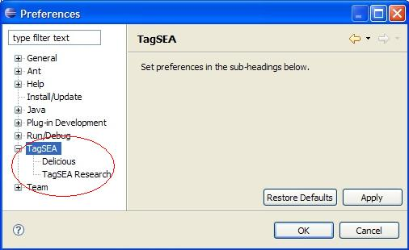
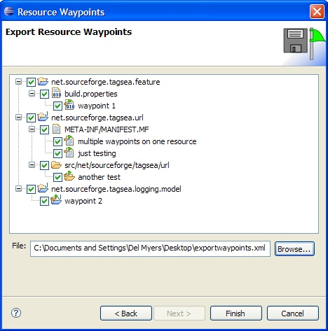
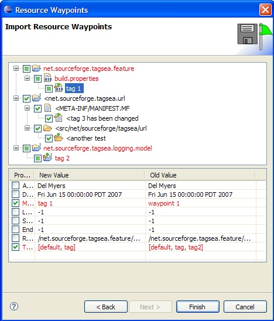

Tags for Software Engineering Activities in Eclipse
New and Noteworthy in 0.6.2
Previous versions
Research
TagSEA registration |
Our user study has finished, and the registration feature is no longer included in the download. When you first install TagSEA, you are given the option to register your copy. Registering allows you to participate in a study that will help to improve this and other tagging/bookmarking tools. Once you have registered, TagSEA will begin to monitor your usage of the tool, and will periodically prompt you to upload logged information about your usage. You can change the frequency of the uploads, or stop the monitoring, at any time using the TagSEA Research preference page. For more info, please see our research page. |
 |
|
User Interface
Preference pages |
A new preference category has been added for TagSEA. Plugins can now contribute preference pages to this category. 
|
Resource Waypoints
Resource waypoint sharing |
There has been a major overhall on how resource waypoints are saved and shared. In a continuing effort to make tags/waypoints shareable, we are trying a new direction with resource waypoints. Now, waypoints can be explicitly shared between users with similar/same workspaces. This is done by using "File>Export>TagSEA>Resource Waypoints". You can select which waypoints you would like to export to an xml file that can be shared, and loaded using "File>Import>TagSEA>Resource Waypoints". If the waypoint already exists in the importing workspace, changes/conflicts are displayed and the user may choose explicitly which changes to accept. 

Unfortunately, these new changes mean that resource waypoints are no longer compatable with pre 0.6.2 releases. |
Extras
C/C++ waypoints added |
Waypoints can now be discovered in C/C++ files (files with the extensions .c, .cpp, .cc, .h, hpp). They use the same syntax as Java waypoints, and react to text edits in the same manner as Java waypoints. |
Tags for Software Engineering Activities in Eclipse (TagSEA)
is a research collaboration between
the University of Victoria's
Computer Human Interaction & Software Engineering Lab
and the IBM Watson Research Centre.